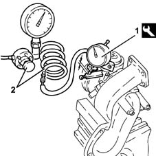

1064AB Check calibration of variable geometry turbocharger vane actuator
- Path
- Test > 10 ENGINE > 1064 ENGINE TURBOCHARGING SYSTEM > 1064A turbo charger assembly > 1064AB Check calibration of variable geometry turbocharger vane actuator
- Kind
- test / check procedure
- Applies to
- engines: 2.4 JTD 10v; all production periods
- Interactive page
- https://sloeber94.github.io/elrnDB-a156/en/#/3239159
Applies to: engines: 2.4 JTD 10v; all production periods
Carry op. 1064A10 turbo charger - r + r .
At the bench, fit the tool fitted with a dial gauge to the actuator.
 | Name | Country |
|---|---|---|
1 | Mount | 1.820.098.000 |
Connect an air line and pressure gauge to the actuator.
Introduce air at a pressure of 0.62 - 0.68 bar and check on the dial gauge that the travel corresponds to the recommended value.
 | Measurement | Value | |
|---|---|---|---|
- | Stroke (mm) | 1 | |
air to (bar) | 0.62 - 0.68 | ||
